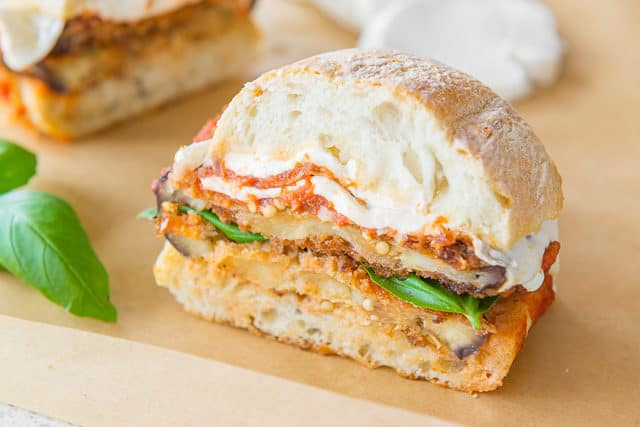

Eggplant Parmesan (Sandwich!)

Description
This is the best sandwich right now, in my opinion. It's sliced eggplant, battered with egg, flour and panko bread crumbs, flashed fried, placed on a ciabatta roll, topped with generous amounts of parmesan, a thick slice of mozzarella and marinara sauce, and baked to perfection. So tasty.
Ingredients:
For the eggplant parm:
- 2 medium eggplants
- 1 cup all-purpose flour
- 3 cups panko bread crumbs
- 1 teaspoon dried oregano
- 1 teaspoon garlic powder
- 4 eggs
- olive oil for frying
- salt to season and pepper to taste
For the sandwich assemblage:
- 6 ciabatta rolls
- 1 cup grated parmesan cheese (parmigiano reggiano)
- 1 cup marinara sauce
- 1 pound ball of fresh mozzarella thinly sliced
- olive oil for drizzling
- fresh basil leaves
- salt and pepper for seasoning
Steps:
- Slice the eggplants into ½” thick disks. If you have the time, season the slices with salt and set aside on rack to “drain” for 30 minutes. Wipe the salt and excess moisture off with paper towel. If you don’t have the time, you can get away with not doing this step, but you’ll need to season the eggplant more aggressively in later steps.
- Preheat the oven to 250 degrees F.
- Place the flour in a dredging bowl. Place the panko, oregano, and garlic powder in another dredging bowl, and stir to combine. In a third bowl, whisk together the eggs with a pinch of salt, pepper, and a tablespoon of water.
- Dredge the eggplant slices in the flour, shake off the excess, then in the egg, shake off the excess, then into the panko bread crumbs. Set aside.
- Heat up a skillet over medium heat, and fill with enough olive oil to coat the bottom of the pan about ¼” up. Place a single layer of eggplant slices into the skillet and fry for about 5 minutes on each side, until golden brown. Make sure to watch that the eggplant slices aren’t burning, and adjust the heat up or down as needed.
- Place the fried eggplant slices on a tray, season with salt and pepper, then keep in the warm oven while you finish frying all batches of eggplant. Add more olive oil to the skillet as needed.
- When you’re done frying all the eggplant, remove the eggplant from the oven and increase the temperature to 350 degrees F.
- To assemble each sandwich, slice a ciabatta roll in half, then put on a single layer of eggplant slices. Season with a pinch of salt and pepper, then add a couple spoonfuls of grated parmesan, then a couple spoonfuls of marinara sauce, then a single layer of sliced mozzarella. Drizzle with olive oil, then put the top of the sandwich on and bake for 10 minutes until the cheese is melty. Tuck a few basil leaves into each sandwich, then enjoy!
Nutrition Facts:
Calories: 705kcal, Carbohydrates: 77g, Protein: 39g, Fat: 26g, Saturated Fat: 14g, Cholesterol: 180mg, Sodium: 1494mg